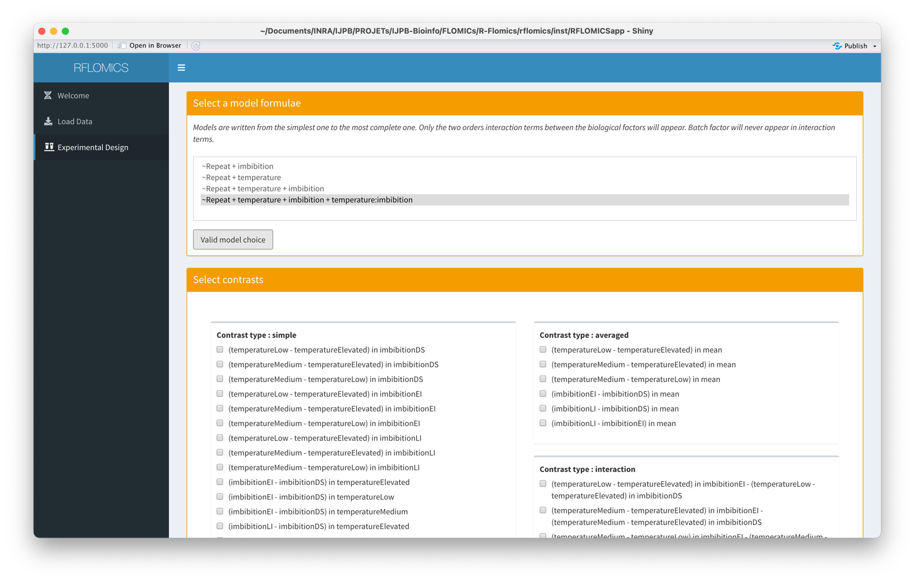
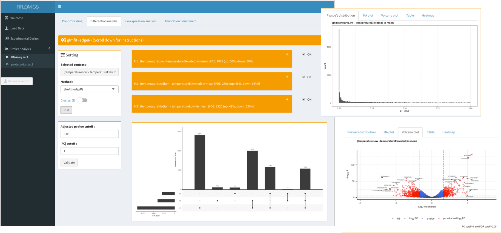
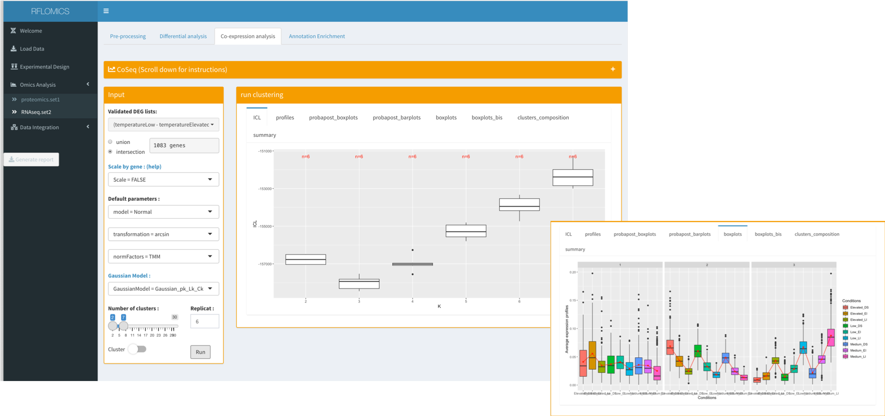
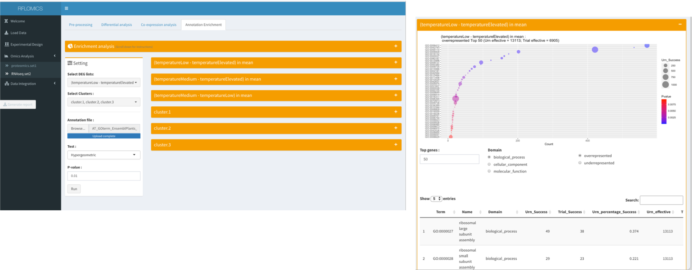

RFLOMICS
RFLOMICS.RmdAbstract
Here, we will walk through a multi-omics data analysis with the RFLOMICS package. We will see how to set up the statistical framework of the designed protocol: ie translate biological condition comparisons into contrasts, perform quality controls and statistical analysis of each omics dataset: ie. find differentially expressed genes/proteins/metabolites (DEF) per contrasts, identify clusters of co-expressed genes and perform a gene set enrichment analysis from lists of DEF or from clusters of co-expressed genes/proteins/metabolites.
1. Run RFLOMICS
library(RFLOMICS)
RFLOMICS::runExample()On the left side of interface, the different tab menu will appear as the analysis progresses to guide the user.
2. Load Data
We start by setting a project name (it is mandatory). Then we load the experimental design and the different omics datasets.
2-1 Dataset example description:
The data used for this vignette have been provided by Pr. Loic Rajjou and Gwendal Cueff. They are included in the inst/ExampleFiles/ecoseed directory of the package. Briefly, A. thaliana’s transcriptome, metabolome and proteome have been obtained in the context of the study of seed germination and vigor. In particular, the authors were interested in deciphering key entities involved in response to environmental stresses (on the mother plant): influences of temperature (high, medium and low) and imbibition stage (Dry: DI, early imbibition: EI and late imbibition: LI). See(https://www.uibk.ac.at/botany/ecoseed/home/)
2-2 Load Experimental Design
The experimental design file contains information about the readiness status of each sample (see link : vignette input ). As soon as this file is loaded, we can define the type (Biological factor : Bio; batch factor : batch; metadata information : meta) and reference level of each design factor.
It is required to have minimum 1 biological factor (maximum 3 biological factors) and 1 batch factor. The order of the columns does not matter.
It possible to exclude samples from design. These samples will be excluded from the analysis even if they are present in the omics dataset matrix.
2-3 Load Omics data
For this tutorial we provide 3 datasets: RNAseq data (read counts), proteomics data (abundance of proteins), and metabolomics data (intensity of metabolites) (see link : vignette input). We must specify for each dataset its type of omics. We can give a suitable name to our dataset. By Default, they will be called respectively (set1, set2, set3).
As soon as the data are loaded the RFlomics MultiAssayExperiment object is created (see link : data management). The upset representation provides details about sample intersection of different datasets.
2-4 Completeness check
The design must be complete and as possible balanced. A Complete design (mandatory) mean that all possible combinations of biological factor’s level (called groups) are presents. A Balanced design (recommended) has an equal number of observations (replicates) for all groups.
This constraint is checked and represented as graph (each square represent 1 group and each color level indicate the number of observations).

3. Set the statistical framework
The interface provides models written from the simplest one to the most complete one. Only the second orders interaction terms between the biological factors will appear. Batch factor will never appear in interaction terms. In our case we choose the complete model.
All ‘a priori’ hypothesis (contrast) calculated from the chosen model are displayed (see link vignette contrast). The user must select those that correspond to the biological issues.
In our case we are studying the effect of temperature on seed germination (transition from the state of dormancy to the state of germination vigor). For that we select 3 average contrasts (see image):
This statistical framework will be applied on all loaded datasets.
4. Omics data analysis
Once the contrasts are chosen, 3 Item menus appear in the side bar menu that correspond to the 3 loaded omics types.
For each dataset, different steps of data analysis are proposed as a tab panel. These analysis steps must be performed sequentially. It is possible to switch between datasets. However, you cannot perform a new task until the previous one is completed. A progress bar will be display indicating the progress status.
4-1 Data Exploratory
In this tab panel we access a data quality control screen and we perform the appropriate data filtering and processing according to the type of omics.
By default, features with 0 count in all conditions are removed from the data.
Specifically for each data we have hte possibility to exclude samples or to select a subset of samples to analyze, provided the completeness condition is met.
The effect of data filtering or sample removing step can be explored thanks to many QC graphs. For each QC, a graph is build on each raw data and filtered data to allow the comparison.
RNAseq data
For RNAseq data, low expressed genes are filtered such that only genes whose cpm expression is greater than “CPM cutoff” in x samples are kept. The value of x is given by “Filtering strategy” (NbOfsample_over_cpm <= NbConditions). By default the data are filtered based on NbCondition strategy with CPM cutoff equal to 5. In this example, there are 9 conditions. So, the number of genes with a CPM less than 5 in at least 9 samples are removed.
# geneToKeep <- counts[rowSums(edgeR::cpm(counts) >= CPM_Cutoff) >= x, ]To correct for differences in sequencing depths (library size), RFlomics proposes one method for normalization, “TMM method” from edgeR package.
# dge <- edgeR::DGEList(counts=counts, group=groups)
# dge <- edgeR::calcNormFactors(dge, method="TMM")For RNAses data the QC graphs are:
- The library size distribution which
- Data Summary:
- Distribution:
- Distribution density
- Principal component analysis

4-2 Differential expression analysis
In this tab panel, we can run the differential expression analysis.
The analysis is run by contrast.
For RNAseq data, the glmFit() function from the
edgeR package is used whereas for proteomic and
metabolomic data, the lmFit() function from
limma packages is used. The ability to run analysis on
a cluster is offered by sliding the cluster button (see
RFLOMICS-configure-cluster-access vignette)
Results will appear in two components: a scrolling menu will give the results of the analysis by contrat and, at the bottom of the panel, the intersecting sets of the lists of DEG is given thanks to the UpSetR() function.
Each results has to bee validated:
- You have to to check the Pvalue distribution for
each contrast and validate it (ok checkbox).
- If the distribution is uniform: it is ok. a few genes are DE and the FDR will find them.
- If the distribution as a peak near 0 and then is uniform: it is also ok. The higher the peak, the higher the number of DE genes. FDR correction can be applied.
- If the distribution has 2 peaks one near 0 and one near 1 or just one peak near 1, it is not a good news! You have to understand what’s happened.
Pvalue-Distrib
You can filter differentially expressed genes/proteins/metabolites either by fold change (|FC|) or by False Discovery Rate (BH) cut-off. Graphs will be automatically updated.
You have to validate to save the cut-off thresholds but also the contrasts’ result selection and pass to the co-expression analysis or to the annotation enrichment step.

4-3 Coexpression analysis
In this tab panel, choice is given to merge (union) or intersect (intersection) the lists of differentially expressed genes/proteins/metabolites associated to contrasts.
-
Co-expression analysis is done using to the coseq package with a set of optimal parameters.
- For RNAseq, data transformation method is set to the arcsin function and normalization method to TMM. No scaling is done for these data. gaussian mixture model is used to decipher the different profiles of gene expression with a set of parameters to estimate fixed to (Gaussian_pK_Lk_Ck).
- For proteomics/metabolomics data, scaling is done on proteins/metabolites. Another sets of parameters estimation is also proposed for the modeling of gene expression profile: (Gaussian_pK_Lk_Bk). It has to be used, if the other one doesn’t fit.
The number of technical replicates to perform (iter) for each K which is the number of expressions’ profile into which the DEG have to be cut, can be first set to 2 to precise the range of K and then put to a minimum of 20 replicates per K.
The ability to run the clustering analysis on a cluster is offered by sliding the Cluster button (see Rflomics_configure-cluster-access).
-
Results description (see CoSeq)
Results can be explored with several plots proposed by coseq. The ICL graph has been slightly modified to show all the range of the ICL values for a given K.
A table of jobs summary is also given. It groups error messages by K.

4-4 Annotation and Enrichment analysis
Then we select a lists of DGEs and clusters to annotate. By default the annotation will be done on all selected DGE lists and clusters.

4-5 Annotation and Enrichment analysis using clusterProfilR
We select the lists of DE genes or clusters to annotate. All available lists are selected by default.
The enrichment analysis is performed using the clusterProfiler R-package. For more information on the methods and the package, please see The article, Bioconductor Package and the clusterProfiler Vignette.
You can chose between several domains, depending on several parameters:
- custom: preferred option. A second panel of settings will ask for an annotation file (tabulated, at least two columns, one for the name of the gene, the other for the name or id of the annotation term) and a third panel will allow the user to indicate which columns indicates what. You can have as many domains/ontology as you want, just indicate the columns name that differentiate them in the right area;
- GO (or GO:BP, GO:CC, GO:MF if only one
GO domain is of interest). The user will have to chose a database
library (org.*.db) installed on the libPath and the keytype of the
entities (to make the connection with the annotation).
- KEGG: In the second setting panel, enter the three letters to identify the organism and the keytype of the entities. It requires to have an online connection.
Once everything is set and the analysis is conducted, several panels are displayed to show the results.
- Overview: shows a table with all results for all lists analyzed, for all domains (i.e. the number of terms found enriched). The light blue line indicates the current enrichment.
- Result Table: Details of the term for the current list. You can change the domain at the bottom.
- DotPlot: shows the first XX terms of a specified domain ordered by adjusted p-values.
- Heatplot: shows the first XX terms (by adjusted pvalues), the involved genes in a heatmap. Colors are set according to the log2FC if the list is based on a differential analysis results or left gray if it is from coseq analysis.
- cnetplot: shows the first XX terms (by adjusted pvalues) in beige nodes and the involved genes in the form of a network. Colors are set according to the log2FC if the list is based on a differential analysis results or left gray if it is from coseq analysis.
For most of the results, you can adjust the number of terms to plot and search for an expression to retrieve specific enriched terms.

Results of the analysis for multiple lists
Results displayed when using a differential analysis list
5. Integration
Once at least two lists of DE genes are validated in the differential analysis tabs, the Integration step will appear in the side bar menu. Three sub menus are available.
5-1 Dataset analysis summary
This panel summarizes the effects of the filtering steps on the selected datasets and the results of the differential analyses. The first row shows how many samples and entities are left in each table. The integration will be performed on these datasets. The second row shows the number of DE entities for each selected contrast and for each table, with the distinction between up-regulated and down-regulated entities.
5-2 MOFA
This integration analysis is performed using the MOFA2 R-package. It is an unsupervised method that searches for latent factors to decompose the variance of the data, similarly to a PCA, but applied to a multi-dataset situation. The interpretation of the results is also very similar to those of a PCA: the most interesting factors are the one explaining more variance, whether it’s on several dataset or just one table. It also gives weights to the features of each table, for each factor. This is interesting in case a factor can be a posteriori linked to a covariate (in our case, the temperature seems linked to the first factor, the features used to build this factor are to be considered very relevant in the analysis).
MOFA results on the ecoseed datasets
MOFA allows for an unbalanced design, so it can be used even if some samples were deleted in the previous steps.
The user can select which tables they want to integrate, then the lists of contrasts they want to select the DE entities from. The union or the intersection of these lists can then be used for the analysis.
As of now, the function used in this step only takes gaussian data. The RNASeq data, given in the form of counts, have to be transformed to fit the process. This is done with the voom transformation from the limma R package.
As recommended by MOFA FAQ, batch effects are removed before applying the function, using removebatcheffect from limma. See MOFA-FAQ. For now, only two batch effects can be removed.
The user can chose to scale or not each tables, with the scale views argument, then set the number of factors to be computed and finally the maximum iterations for the MOFA run. We recommend that the user do not change the number of iterations.
Once everything is set, you can run the analysis by clicking on the run button. Several figure are provided by the interface once the analysis is done:
- Overview: gives an overview of the data, with the number of samples and the number of entities selected for the analysis. This can be a good step to check if the number of features in each table is in the same range.
- Factors Correlation: this is an important graph to check the validity of the results. It presents the correlation between all factors. If a correlation is greater than 0.5 (except for the diagonal), then the results cannot be trusted. It can be because of an inadequate normalization step. You can also check here if the number of factors you asked for has been computed. In some cases, when the user asks for a two great number of factors, MOFA removes the factors that explain 0% of variance in all tables.
- Explained variance: in this panel, two graphs are displayed
- The first one shows the total explained variance for each table.
- The second one is the decomposition of the first for each factors. You can see here which factors are specific to a datatable and which are using features from all the tables.
- Weights plot and Weights table: can be used to check the important features used to build each factor.
- Factor plot: in this panel, the samples are displayed according to their factor score. Several options are offered to the user to modify the graph and check for any association between a factor and a covariate.
- Heatmap: Can only be displayed for each dataset and each factor. Allow to represent the original data or the factor-weight combination (denoise set to TRUE) of the most important features (weight wise) used to built a factor. Metadata can be used to annotate the heatamp.
- Network: not available yet!